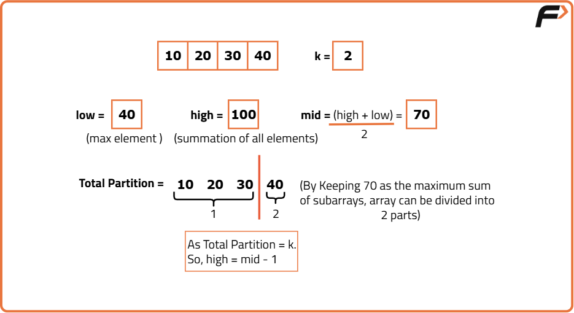
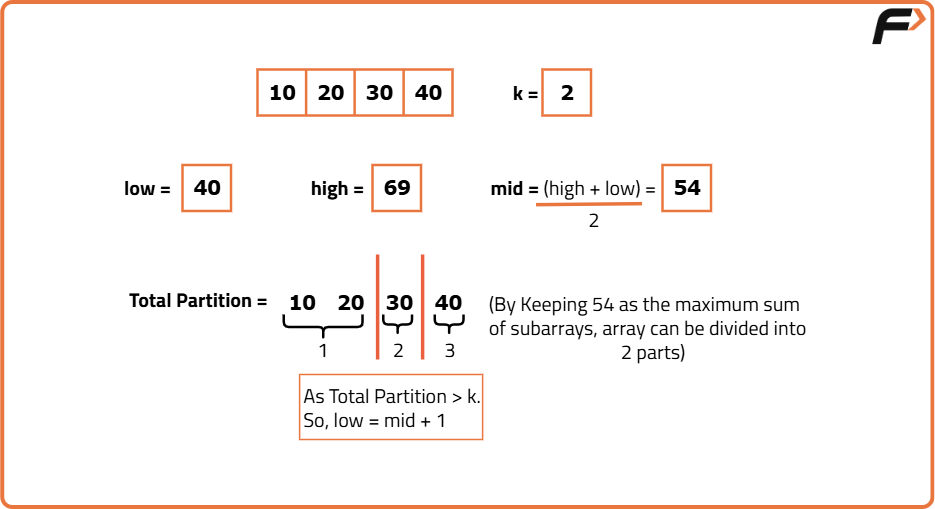
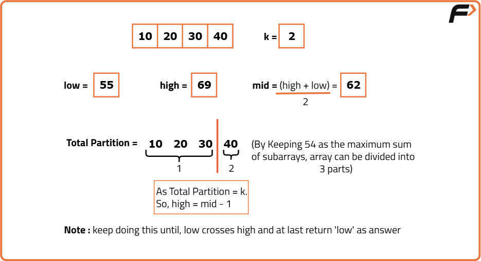

Split Array - Largest Sum
Problem Statement: Given an integer array ‘A’ of size ‘N’ and an integer ‘K'. Split the array ‘A’ into ‘K’ non-empty subarrays such that the largest sum of any subarray is minimized. Your task is to return the minimized largest sum of the split. A subarray is a contiguous part of the array.
Examples
Example 1:
Input Format: N = 5, a[] = {1,2,3,4,5}, k = 3
Result: 6
Explanation: There are many ways to split the array a[] into k consecutive subarrays. The best way to do this is to split the array a[] into [1, 2, 3], [4], and [5], where the largest sum among the three subarrays is only 6.
Example 2:
Input Format: N = 3, a[] = {3,5,1}, k = 3
Result: 5
Explanation: There is only one way to split the array a[] into 3 subarrays, i.e., [3], [5], and [1]. The largest sum among these subarrays is 5.
Disclaimer: Here is the practice link to help you assess your knowledge better. It's highly recommend trying to solve it before looking at the solution.
Brute Force
Algorithm
- First, we will find the maximum element and the summation of the given array.
- We will use a loop to check all possible answers from max(arr[]) to sum(arr[]).
- Next, inside the loop, we will send ‘maxSum’, to the function countPartitions() function to get the number of partitions.
- The first value of ‘maxSum’, for which the number of partitions will be equal to ‘k’, will be our answer. So, we will return that particular value of ‘maxSum’.
- Finally, if we are out of the loop, we will return max(arr[]) as there cannot exist any answer smaller than that.
Code
#include <bits/stdc++.h>
using namespace std;
class SubarrayPartitioner {
public:
// Function to count how many partitions are needed
// if each subarray sum is restricted to at most maxSum
int countPartitions(vector<int> &a, int maxSum) {
int n = a.size(); // size of the array
int partitions = 1; // always have at least 1 partition
long long subarraySum = 0; // sum of the current subarray
for (int i = 0; i < n; i++) {
// If adding this element doesn't exceed maxSum, keep adding to current subarray
if (subarraySum + a[i] <= maxSum) {
subarraySum += a[i];
}
else {
// Otherwise, start a new subarray
partitions++;
subarraySum = a[i];
}
}
return partitions;
}
// Function to find the smallest maximum subarray sum possible
// such that the array is split into exactly k subarrays
int largestSubarraySumMinimized(vector<int> &a, int k) {
// Lower bound: max element in array (can't be smaller than that)
int low = *max_element(a.begin(), a.end());
// Upper bound: sum of entire array (only one subarray)
int high = accumulate(a.begin(), a.end(), 0);
// Brute-force: test each possible maxSum from low to high
for (int maxSum = low; maxSum <= high; maxSum++) {
// If we can form exactly k partitions with this maxSum, return it
if (countPartitions(a, maxSum) == k)
return maxSum;
}
return low; // fallback
}
};
int main() {
vector<int> a = {10, 20, 30, 40};
int k = 2;
SubarrayPartitioner sp; // Create object
int ans = sp.largestSubarraySumMinimized(a, k);
cout << "The answer is: " << ans << "\n";
return 0;
}
Complexity Analysis
Time Complexity: O(N * (sum(arr[])-max(arr[])+1)), where N = size of the array, sum(arr[]) = sum of all array elements, max(arr[]) = maximum of all array elements.
Space Complexity: O(1), no extra space used.
Optimised Approach
Algorithm
Intuition
We are going to use the Binary Search algorithm to optimize the approach.
The primary objective of the Binary Search algorithm is to efficiently determine the appropriate half to eliminate, thereby reducing the search space by half. It does this by determining a specific condition that ensures that the target is not present in that half.
Algorithm
- Place the 2 pointers i.e. low and high: Initially, we will place the pointers. The pointer low will point to max(arr[]) and the high will point to sum(arr[]).
- Calculate the ‘mid’: Now, inside the loop, we will calculate the value of ‘mid’ using the following formula: mid = (low+high) // 2 ( ‘//’ refers to integer division.
- Eliminate the halves based on the number of subarrays returned by countPartitions(): We will pass the potential value of ‘maxSum’, represented by the variable 'mid', to the ‘countPartitions()' function. This function will return the number of partitions we can make.
- If partitions > k: On satisfying this condition, we can conclude that the number ‘mid’ is smaller than our answer. So, we will eliminate the left half and consider the right half(i.e. low = mid+1).
- Otherwise, the value mid is one of the possible answers. But we want the minimum value. So, we will eliminate the right half and consider the left half(i.e. high = mid-1).
- Finally, outside the loop, we will return the value of low as the pointer will be pointing to the answer.



Code
import java.util.*;
class SubarrayPartitioner {
// Counts how many partitions are needed for a given maxSum
public int countPartitions(int[] a, int maxSum) {
int partitions = 1; // at least one partition
long subarraySum = 0; // sum of current subarray
for (int num : a) {
if (subarraySum + num <= maxSum) {
subarraySum += num;
} else {
partitions++;
subarraySum = num;
}
}
return partitions;
}
// Finds the minimum largest subarray sum possible for at most k partitions
public int largestSubarraySumMinimized(int[] a, int k) {
int low = Arrays.stream(a).max().getAsInt(); // largest element
int high = Arrays.stream(a).sum(); // sum of all elements
// Binary search for the smallest maxSum
while (low <= high) {
int mid = (low + high) / 2;
int partitions = countPartitions(a, mid);
if (partitions > k) {
low = mid + 1; // too many partitions → increase maxSum
} else {
high = mid - 1; // valid but try smaller maxSum
}
}
return low;
}
public static void main(String[] args) {
int[] a = {10, 20, 30, 40};
int k = 2;
SubarrayPartitioner sp = new SubarrayPartitioner();
int ans = sp.largestSubarraySumMinimized(a, k);
System.out.println("The answer is: " + ans);
}
}
Complexity Analysis
Time Complexity: O(N * log(sum(arr[])-max(arr[])+1)), where N = size of the array, sum(arr[]) = sum of all array elements, max(arr[]) = maximum of all array elements.
Space Complexity: O(1), no extra space used